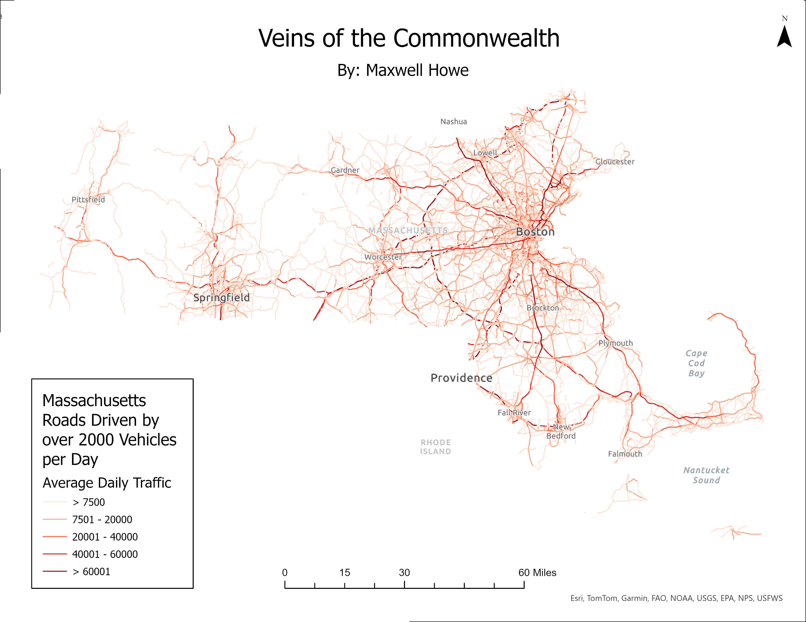
Veins of the Commonwealth
Veins of the Commonwealth
MA transportation network as a circulatory system — roads, rail, and waterways layered to reveal how the state moves.
ArcGIS Pro
Cartography
GPH946

Chronic Absenteeism — Lynn
Chronic Absenteeism — Lynn Public Schools
One of 20 maps from my MS capstone. Geocoded student addresses, hexbin grids, KDE heatmaps, and subgroup breakdowns.
R
ggplot2
Geocoding
Capstone
View full project →
Growth in the Granite State
Growth in the Granite State
Landsat 8/9 multitemporal change detection across Concord, Manchester, and Nashua, NH. Pansharpened to 15m resolution.
Landsat 8/9
TerrSet
Change Detection
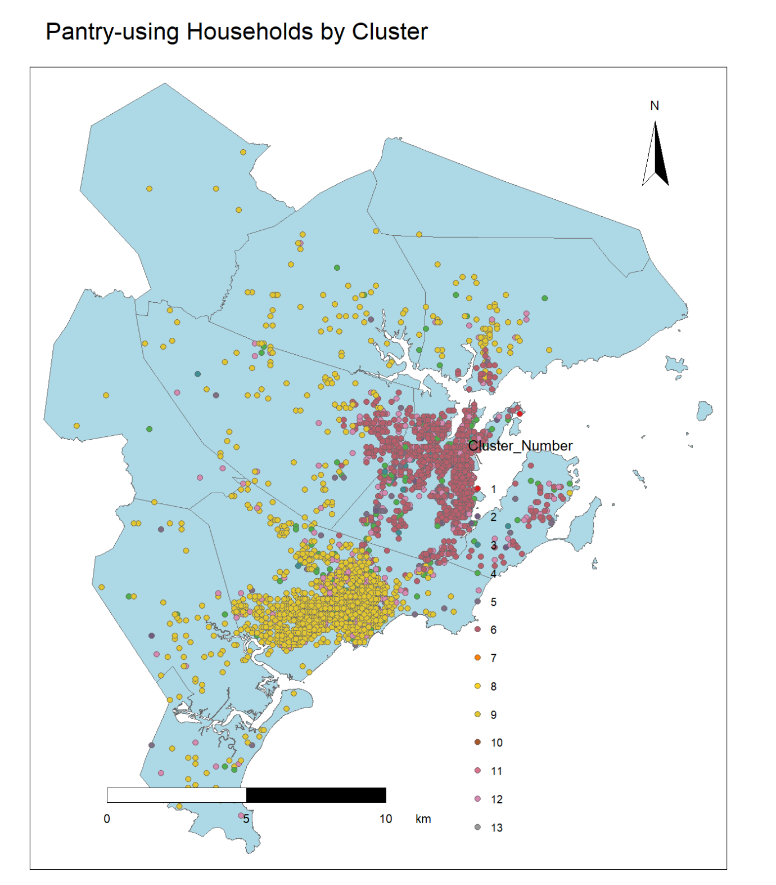
Salem Pantry: Food Access
Salem Pantry: Mapping Food Access
150,000+ client records analyzed. Coverage gaps mapped, statewide similarity modeled via random forest using Census ACS data.
R
Random Forest
Census ACS

Education & Wealth in MA
Education & Wealth in Massachusetts
Bivariate choropleth — median household income vs. educational attainment across MA municipalities. First GIS project.
ArcGIS Pro
Census ACS
Bivariate
Salem Evacuation Routes
Salem Emergency Evacuation Routes
arcpy network analysis weighted by FEMA flood zones and traffic volume — safest evacuation paths in a sea-rise scenario.
Python
arcpy
Network Analysis
FEMA
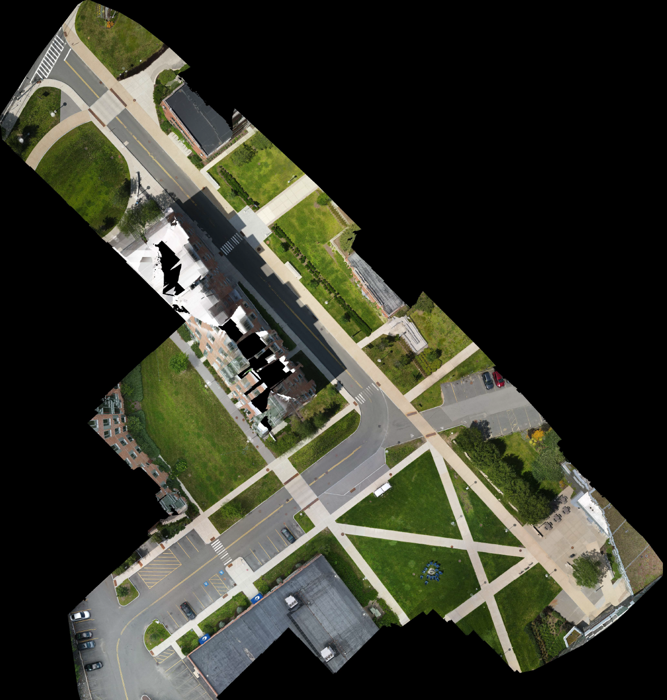
SSU Central Campus
SSU Central Campus Survey
CAD drawings + drone orthomosaics + Trimble GPS ground-truthing combined into a single campus basemap.
UAV
Trimble GPS
CAD
ArcGIS Pro

Lynnfield Cemetery Database
Lynnfield Cemetery Spatial Database
4,000+ grave cards digitized into a queryable SQL geodatabase. Historic cemetery maps georeferenced in ArcGIS Pro.
SQL
Geodatabase
Georeferencing
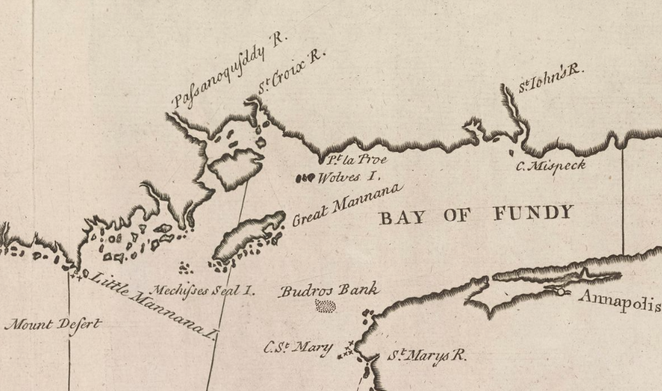
The Whydah Gally
The Whydah Gally
19-stop 3D globe flythrough — slave ship, pirate flagship, 1717 wreck, 1984 recovery. MapLibre GL JS curriculum dashboard.
MapLibre GL JS
3D Globe
Curriculum
View project →
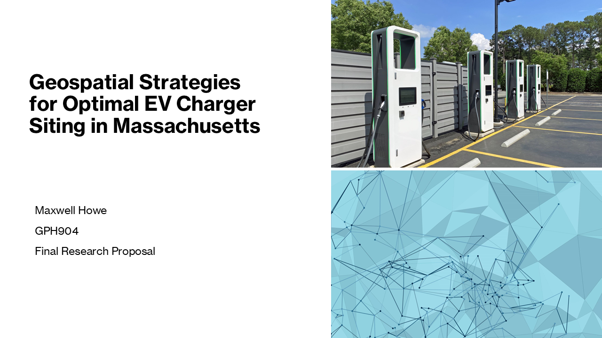
EV Charging Station Siting
Optimal EV Charging Station Siting
GIS-AHP MCDM framework for MA EV deployment — reviewing global literature and proposing an equity-aware spatial methodology.
GIS-AHP
MCDM
Network Analysis
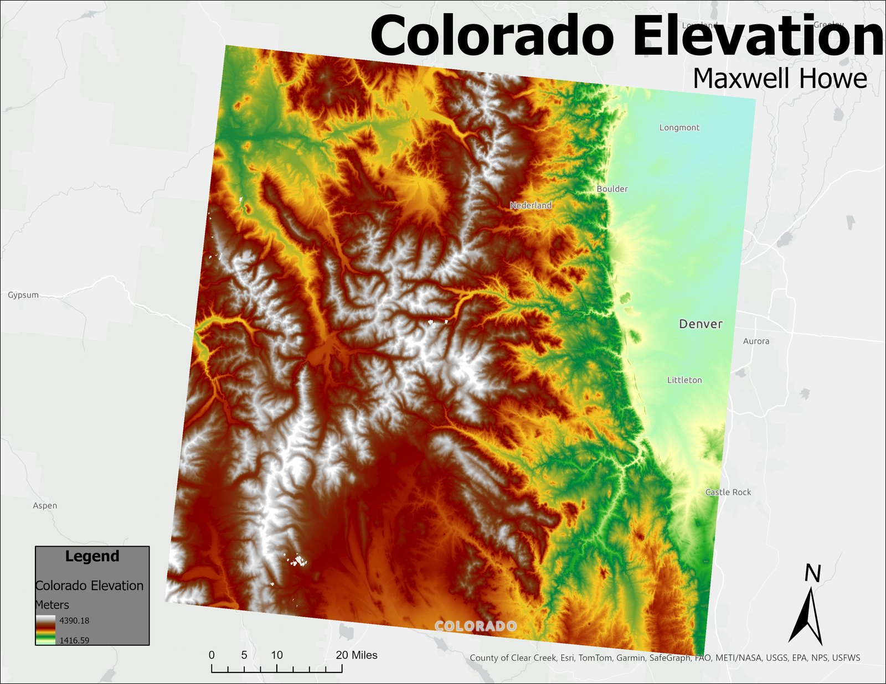
Colorado Elevation
Colorado Elevation
DEM visualized with hillshade and classified color ramp. ArcGIS Pro cartography exercise.
ArcGIS Pro
DEM
GPH946
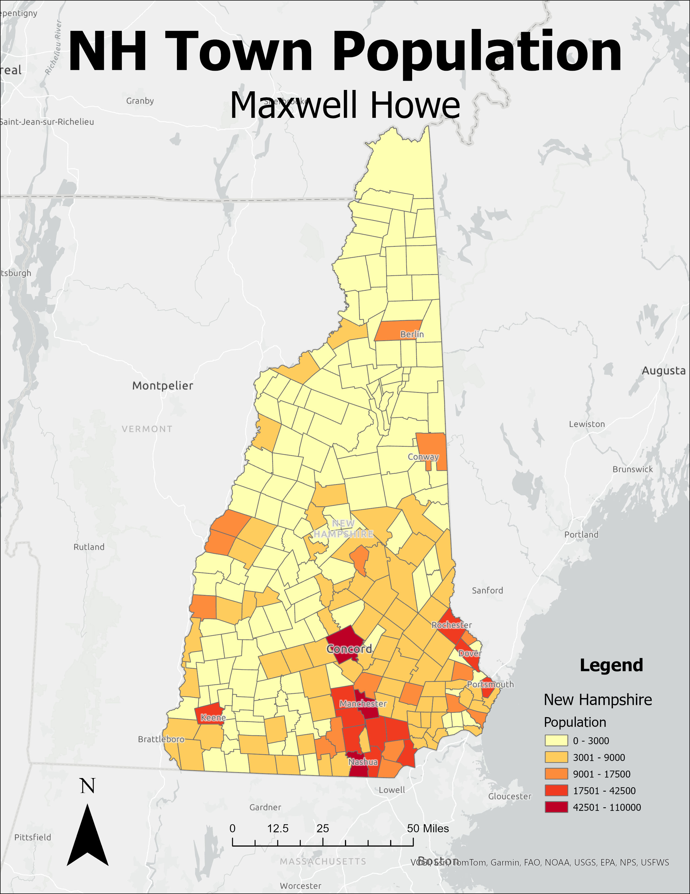
New Hampshire Population
New Hampshire Population
County-level choropleth. Thematic mapping exercise in ArcGIS Pro — classification, symbology, layout.
ArcGIS Pro
Choropleth
GPH946
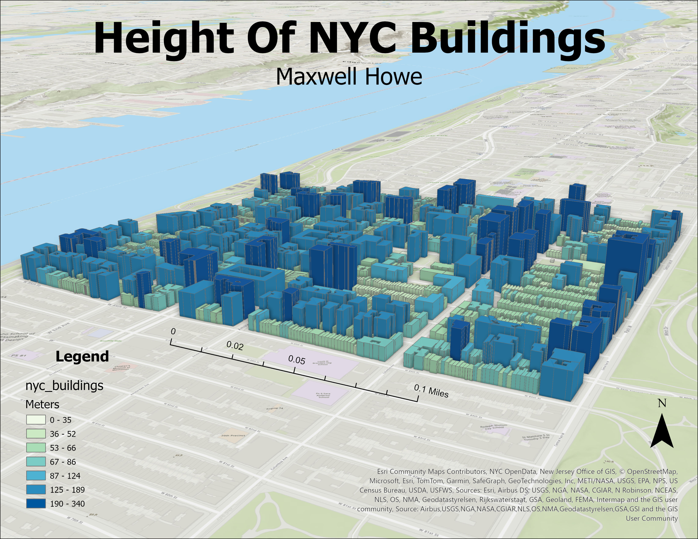
NYC Buildings
NYC Buildings
Building footprint visualization — urban density rendered at the individual structure level in ArcGIS Pro.
ArcGIS Pro
Urban Data
GPH946
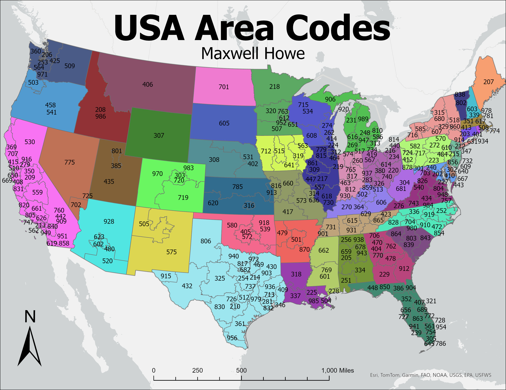
US Area Codes
US Area Codes
Telephone area codes by region — nominal data classification and multi-category legend design.
ArcGIS Pro
Nominal Data
GPH946
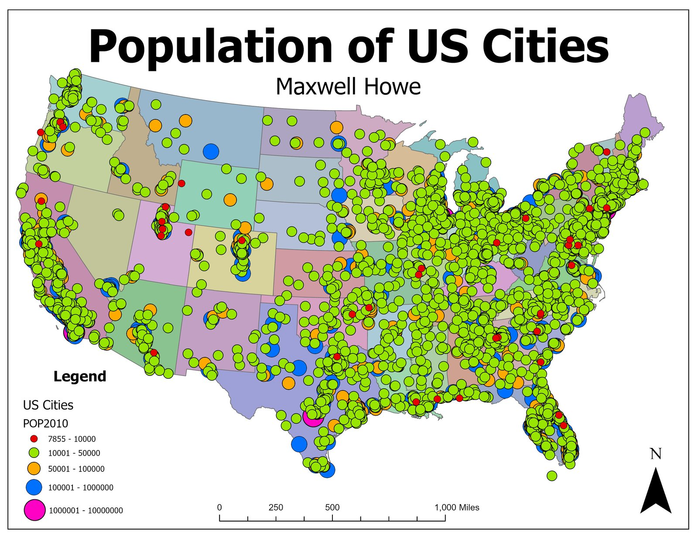
US Cities
US Cities
Proportional symbols scaled to population — visual hierarchy and graduated point symbology exercise.
ArcGIS Pro
Proportional Symbols
GPH946
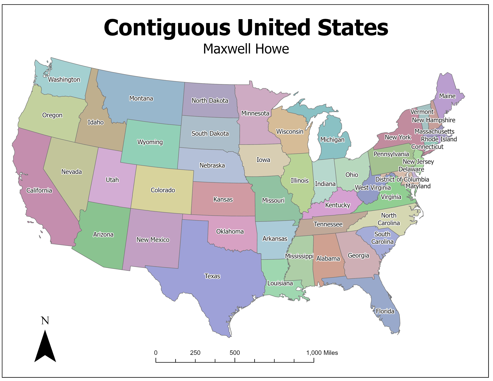
US States
US States
State-level choropleth with classified attribute data — full cartographic layout with north arrow, scale, legend.
ArcGIS Pro
Choropleth
GPH946
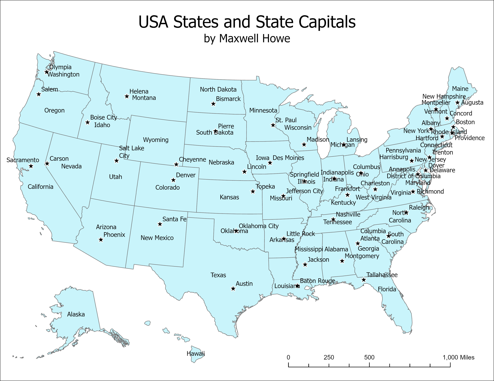
US States & Capitals
US States & Capitals
Reference map emphasizing layout conventions, type hierarchy, and capital placement. ArcGIS Pro.
ArcGIS Pro
Reference Map
GPH946
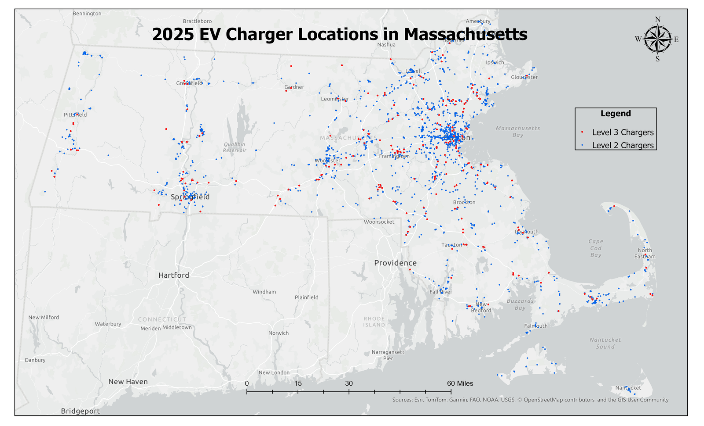
MA EV Charger Locations
Massachusetts EV Charger Locations
Current station distribution used as baseline for GIS-AHP optimal siting research. GPH904.
ArcGIS Pro
EV Infrastructure
GPH904
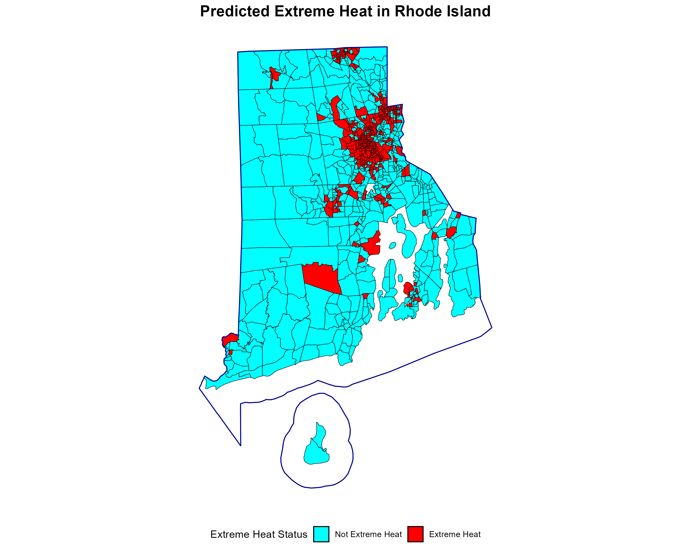
RI Extreme Heat Prediction
Predicted Extreme Heat — Rhode Island
Random forest model predicting extreme heat risk statewide. R-based machine learning applied to spatial climate data.
R
Random Forest
GPH942
More maps added as they're finished — follow @Mapzimus for new drops.
// Follow the work
@Mapzimus
Maps and infographic visualizations are posted on Instagram and Reddit as they're published.